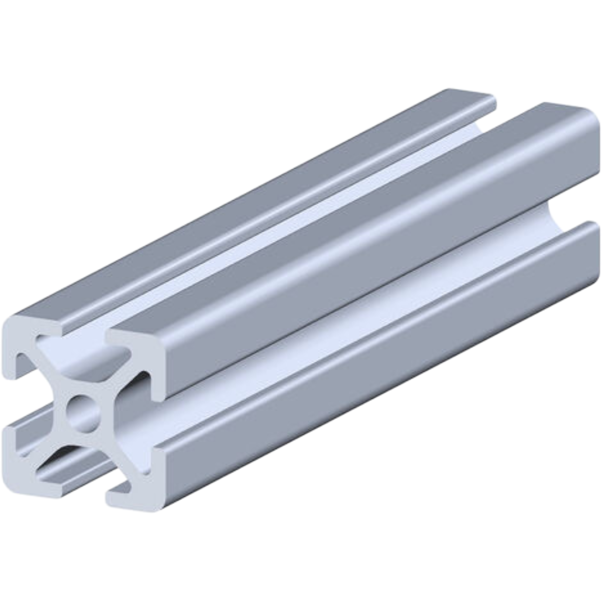
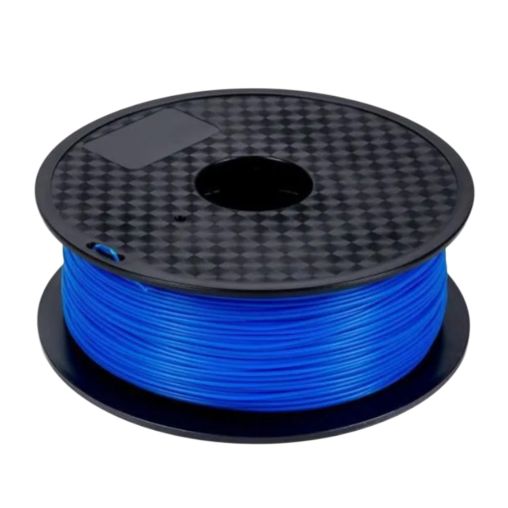

Aluminium 6061-T6.
L'alliage des industries aérospatiale et médicale. Choisi pour sa rigidité structurelle hors pair et sa résistance à la fatigue mécanique — même en cycle continu.
Les profilés V-Slot 20×20 garantissent un assemblage modulaire de précision, sans jeu, sans vibration parasite. Le châssis en est composé majoritairement, et les sections en sont composés essentiellement.
PLA. La légèreté comme arme.
En bout de bras, chaque gramme compte, surtout en présence du rail HIWIN MGN12H. La structure de la pince en PLA est plus qu'un choix économique, c'est un choix cinématique.
Moins de masse en extrémité, c'est moins d'inertie, moins de vibration, et des mouvements plus vifs. La précision commence par la légèreté.
HIWIN MGN12H. Zéro jeu.
Le rail de référence mondiale en guidage linéaire de précision — utilisé en robotique médicale et en machines CNC haut de gamme.
Les deux mors de la pince coulissent sur ce rail avec une répétabilité infaillible. Chaque cube est saisi au même millimètre, à chaque cycle, sans exception.